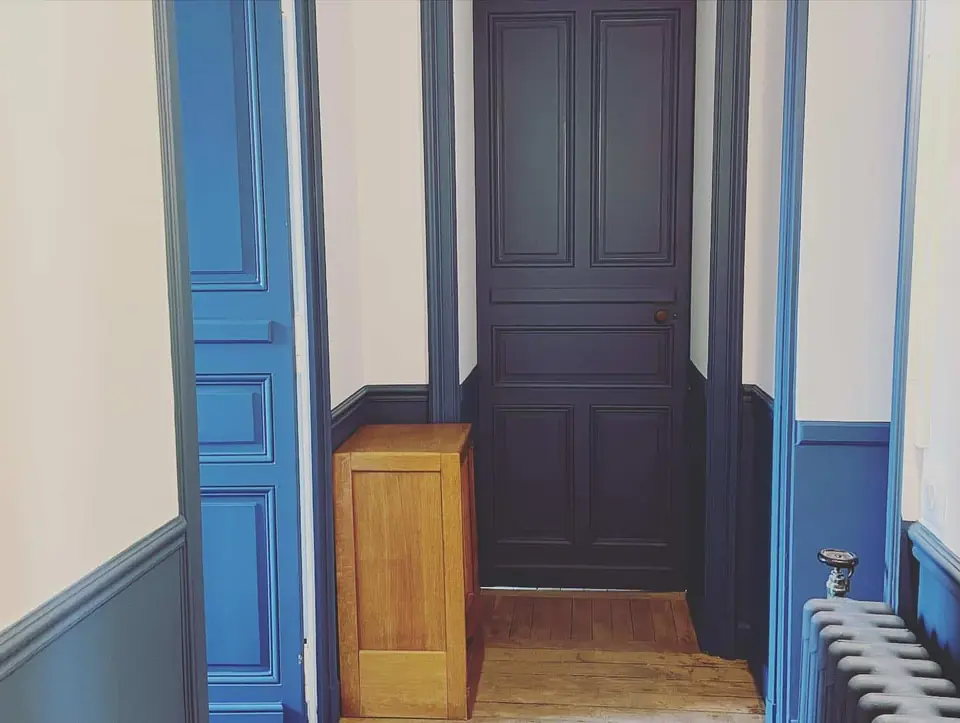

Pages du site › Prestations
Peinture intérieure {{statut}}
{{message}}
Sections de la page
L’œil affiche ou masque une section sur le site. La mise en page, elle, reste fixe.
{{titreSection}}
Gardez la ville : c’est ce que les clients tapent dans Google.{{titreLen}} car.
Photo principale

Le bouton mène toujours au formulaire de devis.
Les trois dernières réalisations de type « Peinture intérieure » s’affichent ici automatiquement : une réalisation publiée depuis le chantier apparaît aussi sur cette page.



{{q.q}}
{{q.r}}
Questions reçues ce mois-ci Option
« Peut-on rester dans la maison pendant les travaux ? » revient dans 3 demandes de devis. L’IA propose une réponse à relire.
Aperçu
Sur Google
h-decoration.fr › prestations › peinture-interieure
{{seoTitre}}
{{seoDesc}}
Idéal : moins de 60 caractères.{{seoTitreLen}} / 60
Idéal : moins de 160 caractères.{{seoDescLen}} / 160
Si vous la changez, l’ancienne adresse renvoie automatiquement vers la nouvelle.